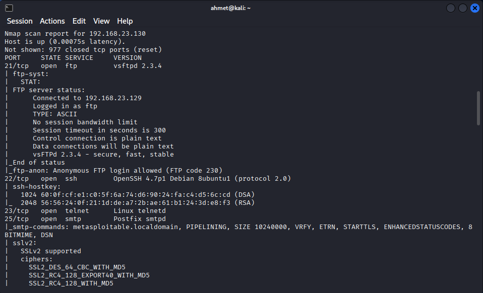

05.04. Sonuçları İncelemek
Created time: November 25, 2025 1:11 PM Multi-select: 05-Pentesting
Nmap Sonuçlarını İncelemek

1. Nmap çıktısının genel yapısı
Tipik bir detaylı Nmap taraması (örn. -sS -sV -O -A gibi) çıktısı şu ana bloklardan oluşur:
- Başlık ve NSE script bilgisi
- Host keşfi (ping, DNS çözümleme)
- Port taraması ve port listesi
- Servis/versiyon bilgileri + NSE script sonuçları
- OS tespiti ve sistem bilgileri
- Ek host script sonuçları (SMB, NetBIOS, vs.)
- Traceroute
- Özet/istatistikler
Bu yapıyı anlarsan, herhangi bir Nmap çıktısını çok hızlı analiz edebilirsin.
2. İlk bakışta yapılacak hızlı analiz
Nmap çıktısına ilk baktığında şu soruların cevabını bulmaya çalış:
- Hedef çalışıyor mu?
Host is up (0.00075s latency).- Cevap: Evet, host ayakta ve lokal ağda (latency çok düşük).
-
Kaç açık port var, profil neye benziyor?
Not shown: 977 closed tcp ports (reset)- 1000 port taranmış, 23’ü açık → çok servisli bir makine, genelde lab / CTF / Metasploitable gibi ortamlarda görürüz.
-
Açık portlara bakınca: FTP, SSH, Telnet, HTTP, SMTP, DNS, Samba, NFS, DB’ler (MySQL, PostgreSQL), IRC, VNC, Tomcat, vs.
→ “Her şey var” tipi bir sistem. Bu da genelde özellikle zafiyet dolu olacak bir Metasploitable profili.
-
En hızlı “low-hanging fruit” (kolay zafiyet) adayları neler?
Açık port listesinden göze çarpan:
21/tcp vsftpd 2.3.4→ Meşhur backdoor zafiyeti olan eski versiyon.- Kimlik doğrulaması zayıf / anonim erişim var mı?
-
ftp-anon: Anonymous FTP login allowed (FTP code 230)→ FTP’ye şifresiz (anonymous) bağlanılabiliyor.
-
SMB script’lerinde
account_used: guestvs.→ SMB tarafında da zayıf güvenlik.
-
Şifrelenmemiş kritik protokoller
- FTP, Telnet, HTTP, IRC, VNC, X11, rsh/rlogin → hepsi trafiği açıkta taşır.
- Bunlar hem kimlik bilgisi çalma (sniffing) hem de bruteforce için hedef.
Bu ilk bakışta, hedefin aşırı derecede zafiyetli, eğitim/lab ortamı olduğunu çıkarabilirsin. Gerçek hayatta bu kadar çok eski servis bir arada ender görülür.
⚠️Uyarı⚠️ Buradan sonraki detaylandırılmış bilgiler örnek bir incelemenin parçasıdır. Amaç her satırın bir anlama geldiğini anlamaya çalışmak ve araştırma aşamasında nelerden faydalanılabilir örnek olarak görmektir. Her satırın anlamını bir anda ezberlemeye çalışmak yerine
nmaptaramasından neler çıkarıbilir anlamaya çalışmak için aşağıdaki kısmı okumaya devam edebiliriz.
3. Port tablosunu okumayı öğrenmek
Ana tablo:
PORT STATE SERVICE VERSION
21/tcp open ftp vsftpd 2.3.4
22/tcp open ssh OpenSSH 4.7p1 Debian 8ubuntu1 (protocol 2.0)
23/tcp open telnet Linux telnetd
...
8180/tcp open http Apache Tomcat/Coyote JSP engine 1.1
Bu tabloyu üç seviyede okumayı öğren:
3.1. Satırın temel anlamı
Örnek:
21/tcp open ftp vsftpd 2.3.4
- PORT / PROTOCOL:
21/tcp→ TCP 21 numaralı port. - STATE:
open→ Port açık ve cevap veriyor. - SERVICE:
ftp→ Standart olarak bu portta FTP beklenir; Nmap bunu doğrulamış. - VERSION:
vsftpd 2.3.4→ Banner ve çeşitli kontrollerle servis türü ve versiyonu tespit edilmiş.
Bu bilgiyi görünce zihninde otomatik şu akış olmalı:
- Servis ne iş yapar? (FTP → dosya transferi)
- Bu versiyon eski mi? (2.3.4 çok eski, Metasploitable için bilinen exploit’li versiyon)
- Sonraki adım ne olabilir? (anonymous login, brute force, searchsploit, Metasploit modülü vs.)
3.2. Satır altındaki NSE script sonuçları
Örnek – FTP satırının altı:
| ftp-syst:
| STAT:
| FTP server status:
| ...
|_End of status
|_ftp-anon: Anonymous FTP login allowed (FTP code 230)
Burada:
ftp-syst→ Sunucu ile ilgili genel bilgileri döküyor (banner, özellikler).ftp-anon→ Anonymous login testini yapıyor ve izinli olduğunu söylüyor.
Ders notu mantığıyla bakarsan:
- Satır → Servisin ne olduğu
- Altındaki script’ler → Bu servise özel mini testler / zafiyet ipuçları.
Aynı mantık HTTP, SMTP, VNC, IRC, SMB vb. tüm servisler için geçerli.
3.3. Versiyon + script = “önceliklendirme”
Örnekler:
-
25/tcp smtp Postfix smtpdAltında:
sslv2: SSLv2 supported→ Çok eski ve güvensiz bir protokol.- Kendini imzalayan, 1024-bit RSA, 2010 tarihli sertifika → Eski yapı, modern güvenlik standartlarına uymuyor.
80/tcp http Apache httpd 2.2.8 (Ubuntu)
Altında:
http-title: Metasploitable2 - Linux→ Ana sayfanın başlığıhttp-methods: GET HEAD POST OPTIONS→ Desteklenen metodlar (şimdilik normal görünüyor)3306/tcp mysql MySQL 5.0.51a-3ubuntu5
→ Çok eski MySQL versiyonu, muhtemelen bilinen zafiyetler var.
Buradaki ders:
Versiyon numarasını gördüğün her yerde aklına “Bu eski mi? Bu versiyon için bilinen exploit var mı?” sorusu gelsin.
4. Hedef sistem profili: OS, sanallaştırma, uptime
Çıktının alt tarafı:
Device type: general purpose
Running: Linux 2.6.X
OS CPE: cpe:/o:linux:linux_kernel:2.6
OS details: Linux 2.6.9 - 2.6.33
...
MAC Address: 00:0C:29:EB:6C:40 (VMware)
...
Uptime guess: 0.053 days (since Tue Nov 25 03:53:54 2025)
Network Distance: 1 hop
Bunları nasıl okumalı:
- OS tespiti
- Linux 2.6.9–2.6.33 arası bir kernel → Eski bir Linux dağıtımı (Metasploitable klasik olarak Ubuntu 8.04 tabanlı).
- Sanallaştırma bilgisi
- MAC OUI: VMware → Bu makinenin bir VM olduğunu gösteriyor.
- Uptime
- 0.053 gün ≈ 1–1.5 saat önce boot edilmiş.
- Network distance
1 hop→ Aynı lokal ağda, router’dan geçmiyorsun, doğrudan erişim.
Ders notu olarak:
- OS tespiti → Exploit seçerken (Metasploit modülü, kernel exploit) yardımcı olur.
- MAC vendor → “Bu bir VM mi? Bulut mu? Fiziksel mi?” gibi çıkarımlar.
- Uptime → Sistemin yeni mi reboot edildi, bir saldırı sonrası mı açılmış vb. analizler.
5. Host script sonuçları: SMB, NetBIOS, vs.
Host script results:
| nbstat: NetBIOS name: METASPLOITABLE, ...
| smb-os-discovery:
| OS: Unix (Samba 3.0.20-Debian)
| Computer name: metasploitable
| Domain name: localdomain
|_ System time: 2025-11-25T05:10:06-05:00
| smb-security-mode:
| account_used: guest
| authentication_level: user
|_ message_signing: disabled (dangerous, but default)
Buradan neler öğreniyoruz?
-
Makine adı / domain:
metasploitable,localdomain→ Hedefin ağ içindeki kimliği.
-
Samba versiyonu:
3.0.20-Debian→ Bu versiyon da Metasploitable’da bilinen zafiyetlere sahip.
-
Security-mode:
account_used: guest→ Nmap guest hesabıyla SMB’ye erişebilmiş.message_signing: disabled→ SMB trafiği üzerinde bütünlük koruması yok, MITM için elverişli.
6. Traceroute ve ağ konumu
TRACEROUTE
HOP RTT ADDRESS
1 0.75 ms 192.168.23.130
- Sadece 1 hop → Aynı subnet’te, araya router girmiyor.
- Latency çok düşük → VLAN/VM içi iletişim.
Ders notu:
- Traceroute kısmı ile hedefin topoloji içindeki konumu hakkında fikir edinirsin (DMZ’de mi, WAN arkası mı, doğrudan lokalde mi?).
7. Uygulamalı “Analiz Şablonu”
Bunu bir checklist gibi düşünebilirsin. Elinde herhangi bir Nmap çıktısı olduğunda aşağıdaki sırayla incele:
- Host durumu
- Host up mı?
- Latency ve hop sayısı → hedef sana ne kadar yakın?
- Genel port profili
- Kaç açık port?
- Bu profil neye benziyor?
- Sadece 80/443 → tipik web sunucusu
- 445/139 → Windows/Samba dosya sunucusu
- Bir sürü port (FTP, SSH, DB, HTTP, SMTP, IRC…) → Lab / gelişigüzel konfigüre edilmiş sunucu
- Her açık port için:
- Servis: Ne iş yapıyor? (FTP, HTTP, SSH, DB vs.)
- Versiyon: Eski mi, bilinen zafiyetleri var mı?
- Script çıktılarına bak:
ftp-anon,http-title,http-methods,mysql-info,vnc-info,smb-*gibi.
- “Sonraki adım ne?” sorusunu sor:
- Örneğin FTP → anonymous login dene, dosya yapısını keşfet.
- HTTP → Web uygulaması keşfi (dirb/gobuster), manuel test.
- DB → Zayıf parolalar / SQL client ile bağlantı.
- SSH → brute force veya bilinen zafiyetli versiyon mu?
- Hızlı zaafiyet avı (low-hanging fruit)
- Çok eski versiyonlar,
- Şifrelenmemiş yönetim servisleri (telnet, rsh/rlogin, VNC, X11),
- Anonim veya guest erişim,
- “bindshell”, “backdoor” gibi doğrudan zararlı servis isimleri.
- OS ve sistem bilgisi
- OS, kernel versiyon aralığı, vendor bilgisi.
- Uptime, MAC vendor, host name / domain.
- Bunlar exploit seçimi ve raporlama için önemli.
- Host scriptleri (SMB, NetBIOS, vs.)
- SMB versiyonu ve güvenlik modu,
- NetBIOS isimleri, domain/workgroup,
- Saat bilgisi (log korelasyonu ve time skew analizi için).
- Sonuç: Kısa özet çıkar
- “Bu makine büyük ihtimalle X türü bir sunucu, üzerinde A, B, C gibi eski servisler var, öncelikli saldırı yüzeylerim şunlar: …”
8. Bu özel çıktıya göre özet
Öğrenme açısından örneği netleştirelim; bu Metasploitable2 çıktısı bize şunu anlatıyor:
- Eski bir Linux (2.6.x, Ubuntu 8.04 tabanlı), VMware içinde çalışan bir lab makinesi.
- Çok sayıda eski ve zafiyetli servis açık (vsftpd 2.3.4, …, vb.).
- Bir kısmında anonim veya zayıf kimlik doğrulama (anonymous FTP, guest SMB).
- Birçok şifrelenmemiş yönetim kanalı (Telnet, rsh/rlogin, VNC, X11).
- Bu da onu, eğitim amaçlı “her yerinden patlayan” bir hedef haline getiriyor.